Difensori
2 Andoni Gorosabel (TD)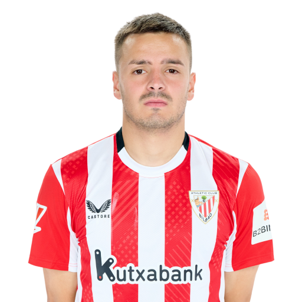
3 Dani Vivian (DC)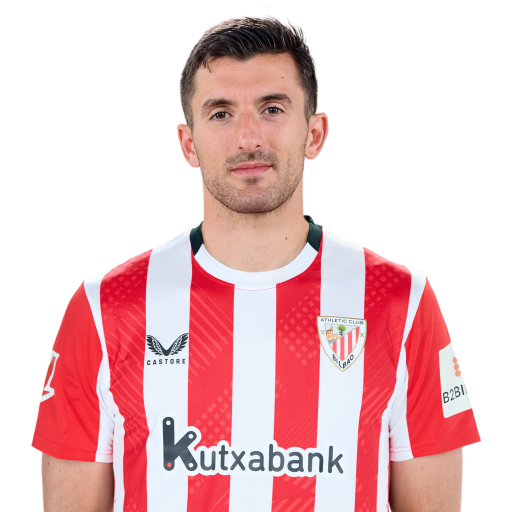
4 Aitor Paredes (DC)
5 Yeray Álvarez (DC)
14 Unai Núñez (DC)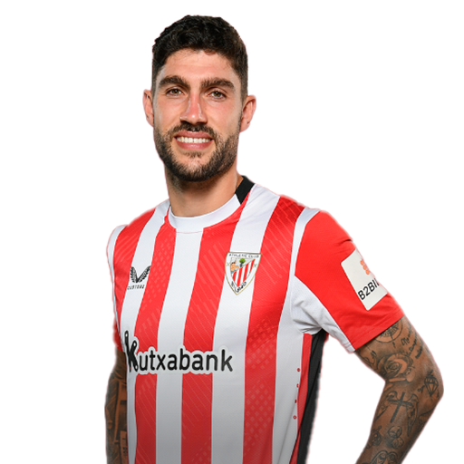
15 Iñigo Lekue (TD)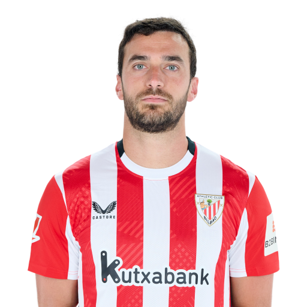
17 Yuri Berchiche (TS)
18 Óscar de Marcos (TD)
Centrocampisti
6 Mikel Vesga (CC)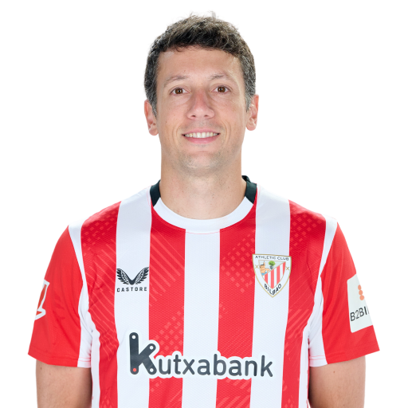
8 Oihan Sancet (TQ)
16 Iñigo Ruiz de Galarreta (CC)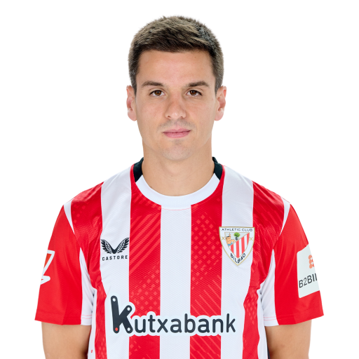
20 Unai Gómez (TQ)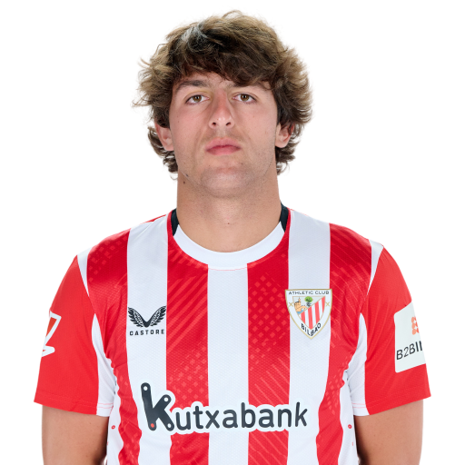
21 Ander Herrera (CC)
23 Mikel Jauregizar (CC)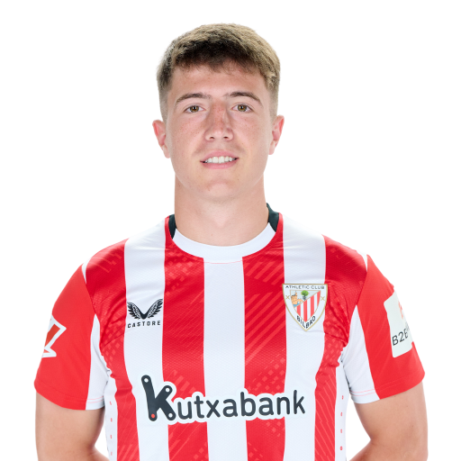
24 Beñat Prados (CC)
Attaccanti
7 Álex Berenguer (AS)
9 Iñaki Williams (AD)
10 Nico Williams (AS)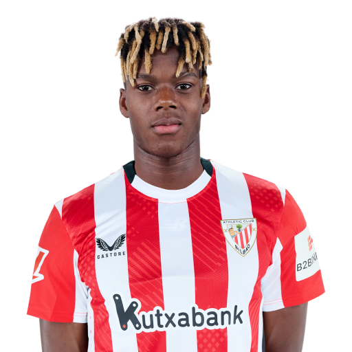
11 Álvaro Djaló (AS)
12 Gorka Guruzeta (AT)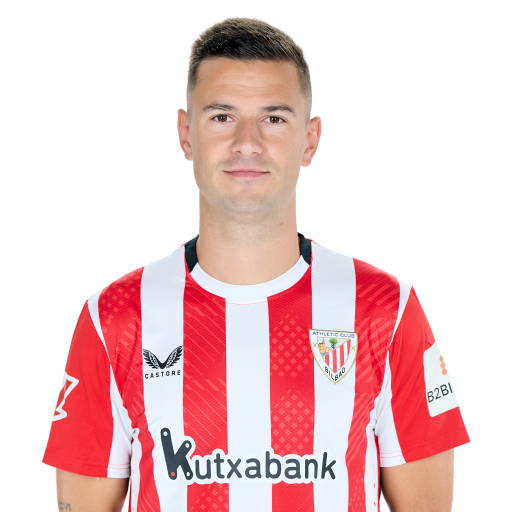
19 Javier Martón (AT)
22 Nico Serrano (AS)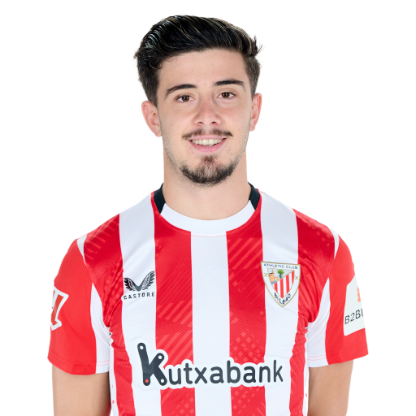